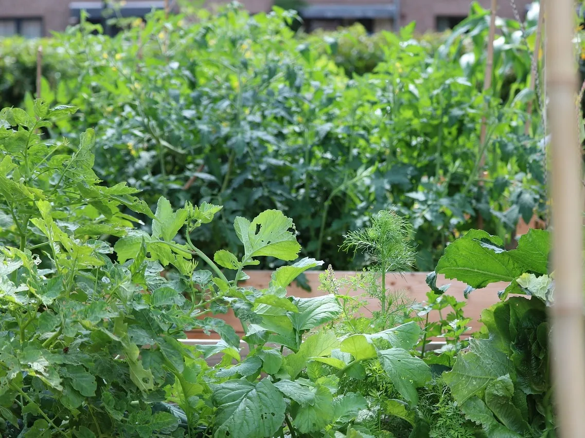

Univers 27 · Bientôt
Cultive ton jardin : sème, arrose et suis les saisons.

La mécanique
Au Jardin des saisons, on organise les semis selon les saisons, on mesure la croissance des plantes, on trie les graines et on aménage les parterres. Le jardin porte le temps, la mesure et la géométrie.
Exemples de missions
Les six mini-jeux · N0→N5
Recomposer une scène de l'univers, de 4 à 20 pièces.
Guider un poney, un vélo ou un robot sur un tracé.
Ranger et associer les objets du métier.
Remettre les gestes d'une activité dans l'ordre.
Aménager et personnaliser son décor.
Retrouver les détails cachés d'une scène.
Univers en préparation. Voici le monde que votre enfant y vivra ; il ouvrira progressivement. Écrivez-nous pour être prévenu de son ouverture.